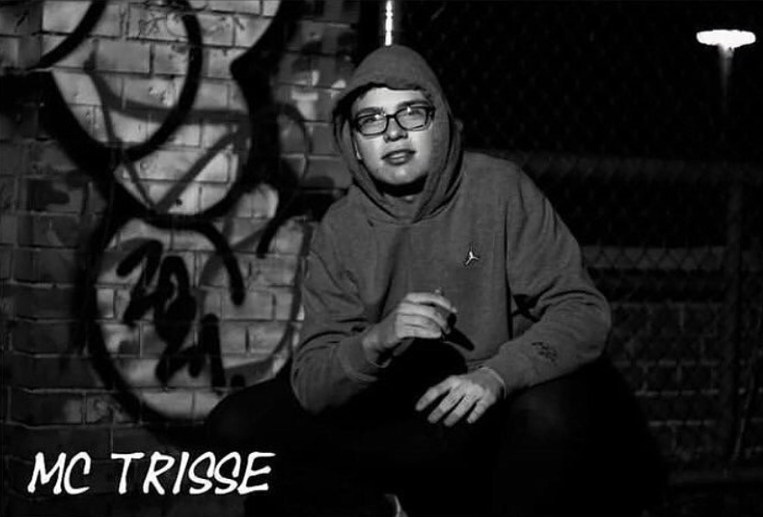

Melancholischer Track über den Winter. Jetzt hören

Angekündigtes Album für 2026. Mehr erfahren

Eine musikalische Hommage an die offenen Jugendräume Berlins – mit Fokus auf Gemeinschaft, Chancen und Vielfalt in den Bezirken. Jetzt anhören
MC Trisse ist ein 20-jähriger Berliner Rapper, der sich leidenschaftlich für die Jugendkultur einsetzt.
MC Trisse engagiert sich ehrenamtlich in Jugendfreizeiteinrichtungen (JFEs) und nutzt seine Musik, um junge Menschen zu erreichen und zu inspirieren.
Seine Songs behandeln oft Themen aus dem Alltag junger Menschen in Berlin und spiegeln seine Erfahrungen und Beobachtungen wider.